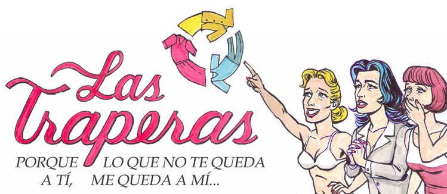

Tu navegador
no soporta la tecnología
utilizada en esta presentación, por lo tanto de presenta un versión simplificada
Para ver al presentación tal y como fue diseñanada, por favor instala la última versión de
Chrome,
Safari
o
Firefox.

+

=
[nombre proyecto]
tu estilista de moda personal
MODA
MERCADO
PUBLICIDAD
ONLINE
falta de identidad y homogenizacion
[ilustración de muchas mujeres comprando lo mismo]
alta de comunidades locales de moda
- 2000 usuarios registrados
- 200 proveedoras
- 8000 p
poco sostenible
-
1 Kg. de ROPA nueva requiere (en promedio):
- 1446 galones de AGUA
- 1.5 kilos de FERTILIZANTES
- 1kg de PESTICIDAS
- produce 1.6 kilos de GASES de efecto invernadero
todos usamos ropa, pero no todos usamos el mismo tipo
tenemos identificados targets: señora ficha, la chibola vintage, la ejecutiva, la moderna, hippie ...
[ilustracion de mujeres]
no existe un lugar donde intercambiar ropa
[ilustracion de mujeres]
cantidad abrumadora
- Facebook => 50% de los usuarios de internet
- Google => 90% usuarios
-
Cada vez más compañías se unen a la tendencia
=> los usuarios necesitamos menos publicidad, pero mas interesante
poco certera
Basada en datos
inferidos
de los navegadores o propios una plataforma específica (aka fb)
=> los usuarios necesitamos
sintonizar
la publicidad a nuestras necesidades
mucho "ruido" y desperdicio
despierta poco interés (inclusive rechazo e
inmunidad
a la publicidad)
=> no es una fuente confiable para nosotros los usuarios
muy baja eficiencia (CTR)
- CTR mercado global => 0.1%
- CTR google => 0.4%
- CTR facebook => 0.051% (y bajando)
La herramienta
¿Cómo sería?
usuarios
nosotros
el
planeta
test sobre tus gustos
*
[imagen]
a Nosotros
nos permite conocer a nuestras usuarios e identificar tempranamente tendencias
aprende de ti y te ofrece elementos que realmente te puedan interesar
[imagen]
a nosotros
- nos permite itentificar posibles proveedoras
- estimular la creación de un vínculo entre usuaria-herramienta
- ofertar publicidad responsablemente
calcula tu huella ecológica
[imagen]
para el planeta
crea conciencia y promueve el consumo responsable
historial
- historico de tus cambios de estilos
- has ahorrado X agua
- has contribuido X a economías personales
- has contribuido X a proyectos sociales
- has ahorrado X dinero
... y mucha interacciones más
- mandarle opciones a tu amiga
- hacer el test como si fueras tu amiga y mandarle el resultado y compararlo (como te ven tus amigas?)
- pedir recomendaciones para situaciones especiales (soy dark y tengo un matri de día, que me pongo?)
- promosionar tus productos entre tus amigas
- si eres una excelente proveedora, crearte tu propio espacio virtual!
- publicar tus combinaciones de prendas
- comentar, recomendar con tar historias alrededor de la ropa
- dar feedback a la plataforma: además de los colores, me gustaría poder decir si me gustan las prendas apretadas o sueltas
... y mil cosas más q no entran en esta presentación!
a Nosotros nos brinda
- Información más confiable y de primera mano
-
+
- una herramienta para el estudio "en vivo" de mercado
-
=
-
Un modelo de negocio basado en la gestión de la información y el conocimiento
para el Planeta y la Humanidad
- Descentralización de la economía
- Minimización de la huella ecológica
consumo responsable
con mucho gusto
poco gasto
y la conciencia limpia